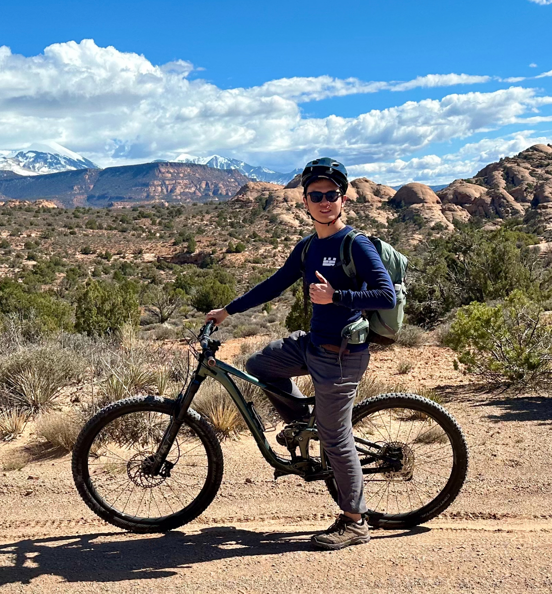
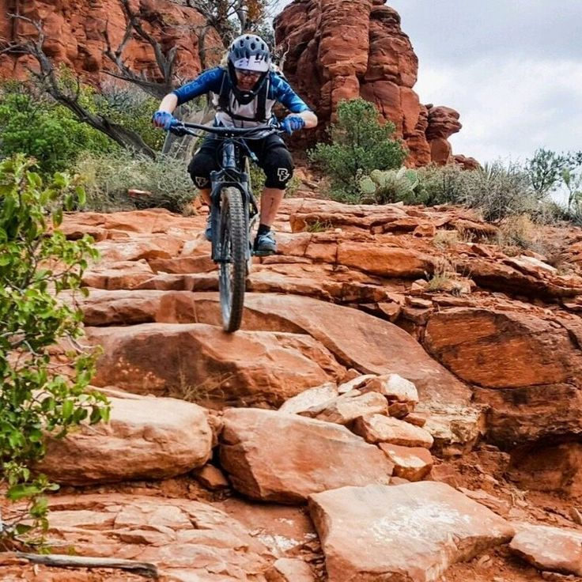

Pedaling Through Paradise: My Thrilling First Ride in Moab
19 Mar 2024
MOUNTAIN BIKING | Moab, Utah
The Adventure Begins
 Our adventure was set to cover a challenging but rewarding route: 8 miles of uphill with a 1,700 ft elevation gain, followed by a 10-mile descent packed with dangerous turns and thrilling rock jumps. Preparation for this journey was minimal on my part, thanks to the convenience of renting bikes from a local shop—a blessing for a newbie like myself. With our bikes checked and ready, sandwiches packed, and 2 liters of water each to stave off dehydration, we were all set for what promised to be a memorable day.
The Strenuous Climb
 The ascent was nothing short of a baptism by fire. Every
mile conquered was a testament to physical and mental endurance
I wasn't even aware I possessed. Surrounded by the breathtaking
beauty of Moab's iconic red rock formations, the challenge of the
climb became an integral part of the landscape's allure. The
camaraderie of the group, a mixture of novices and seasoned riders,
provided a buoyant atmosphere that kept spirits high and legs pedaling.
The ascent was nothing short of a baptism by fire. Every
mile conquered was a testament to physical and mental endurance
I wasn't even aware I possessed. Surrounded by the breathtaking
beauty of Moab's iconic red rock formations, the challenge of the
climb became an integral part of the landscape's allure. The
camaraderie of the group, a mixture of novices and seasoned riders,
provided a buoyant atmosphere that kept spirits high and legs pedaling.
The Thrilling Descent
 The real test, however, awaited on the descent. What began as a thrilling ride through Moab's infamous trails quickly turned into a battle against my own body. Cramps seized my leg with such ferocity that I found myself unable to move, let alone ride. In that moment, the adventure I had embarked on took on a new dimension—one where the danger felt all too real, and the vulnerability of being a beginner in such a demanding sport was laid bare.
Making It Back: A Mix of Relief and Triumph
 The relief and sense of accomplishment that washed over me as we made it back
safely were indescribable. I had conquered my first mountain biking trail, faced
and overcome unexpected challenges, and discovered a resilience within myself I
hadn't known existed.
This trip was more than just a day of biking; it was a
journey of discovery, of pushing boundaries, and of experiencing the raw beauty
and thrill of Moab's legendary trails. I went from a complete novice to a proud
(if somewhat sore) mountain biker, grateful for the experience and the memories made.
The relief and sense of accomplishment that washed over me as we made it back
safely were indescribable. I had conquered my first mountain biking trail, faced
and overcome unexpected challenges, and discovered a resilience within myself I
hadn't known existed.
This trip was more than just a day of biking; it was a
journey of discovery, of pushing boundaries, and of experiencing the raw beauty
and thrill of Moab's legendary trails. I went from a complete novice to a proud
(if somewhat sore) mountain biker, grateful for the experience and the memories made.
Reflections:
 As we made our way back, the overwhelming sense of accomplishment was palpable.
Not only had I survived my first mountain biking adventure, but I had also conquered
personal fears and physical limitations along the way. The beauty of Moab, with its
imposing cliffs and vast skies, had imprinted itself on my memory, forever linked with
this significant personal achievement. Looking back on the day, the challenges faced and
overcome underscore the essence of adventure—it's not merely about the physical journey,
but the growth and discovery that occur along the way. My first mountain biking experience
in Moab was a testament to this, filled with moments of fear, exhilaration, and ultimately,
profound satisfaction.
As we made our way back, the overwhelming sense of accomplishment was palpable.
Not only had I survived my first mountain biking adventure, but I had also conquered
personal fears and physical limitations along the way. The beauty of Moab, with its
imposing cliffs and vast skies, had imprinted itself on my memory, forever linked with
this significant personal achievement. Looking back on the day, the challenges faced and
overcome underscore the essence of adventure—it's not merely about the physical journey,
but the growth and discovery that occur along the way. My first mountain biking experience
in Moab was a testament to this, filled with moments of fear, exhilaration, and ultimately,
profound satisfaction.